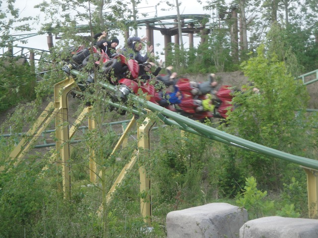
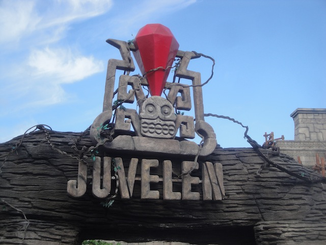

| |
Juvelen Review

Today, we'll be reviewing Juvelen @ Djurs Sommerland. This is one of those Intamin Motorbike coasters. By far the most rare type of them all. People usually will just think of the Vekoma ones or the Zamperla ones. I've yet to ride a Vekoma Motorbike Coaster, but I can tell you that Juvelen destroys the Zamperla Motorbike Coasters. It's so much better. This honestly reminds me far more of Manta than any of the Zamperla Motorbikes. And that ride is much better than either of those (Oh wait. Never mind. Just remembered that PONY EXPRESS IS THE BEST RIDE EVER!!!). So yeah. This ride is really freaking good. I know they were really advertising it when I was there as their hot new thing. And while this ride certainly doesn't dethrone Piraten (It's a freaking Intamin Mega-Lite. You're not going to dethrone that). But this still is a really good ride that's totally worth riding. So yeah. Let's ride. You get in the motorbikes, get the lap bar just right, and away we go. We roll out of the station and into this room. Cool music is playing, we see these statues, and it seems like this is supposed to be this abandoned temple. Cool. I like that. =) But of course, the doors open, and the coaster now begins as we go through the 1st launch. Far from the best launch ever, but we still get a decent amount of speed and are off to a good start. We then head around a low to the ground turn that provides some laterals. Those are always fun. We then head up a decent sized hill. Far from the best hill. There's no airtime, but it's still fun. We then head around a banked curved turnaround that's low to the ground. And of course, we then go into another low to the ground turn in the other direction. Awesome!! More laterals! This continues as we pass through a cool little...bridge only to yank to the other side as we slam into another banked turn in the opposite direction. And yeah. It's a ton of fun. We then go through a small little dip and...BAM!!! You're just in the second launch. Unlike Manta, it doesn't even stop. It just picks up even more speed. And we were already going fairly fast to begin with. So now, we're pretty much just flying. And then of course, we go straight into another low to the ground turn. And if you thought the laterals in the first half were strong, you have yet to experience the turns in the second half. These things are freaking strong. Seriously, it just slams you to the other side. And of course, after that turn, BAM!!! Into another turn, and right over the water and under a cool rock formation. We go around a couple more banked turns, giving us more tasty laterals as we burn off all that speed. We then head into a wave hill, and while this sadly doesn't give us the crazy airtime that you find on Piraten, it still is a fun element. We then head around another curve with some good laterals and go into another tiny little hill. No airtime, but it's still a lot of fun. And then of course, we get to go into another low to the ground (or should I say water) hill that gives us some really good laterals. We then head into another hill and...Wee!!! Some decent airtime (at least for a Motorbike Coaster). We then head into another identical hill. Wee. Zip through one last low to the ground turn, and zip right up into the brake run. Damn. This ride is good. This ride is really good. I know that people will overlook it because of Piraten, and yeah. I can't really blame since that ride is freaking amazing. But this ride is really good too. Definetly one of the best Motorbike coasters (if not the best) ever and a great fit for Djurs Sommerland.
8/10
Location: Djurs Sommerland
Opened: 2013
Built by: Intamin
Last Ridden: June 19, 2014
Juvelen Photos




Home
|